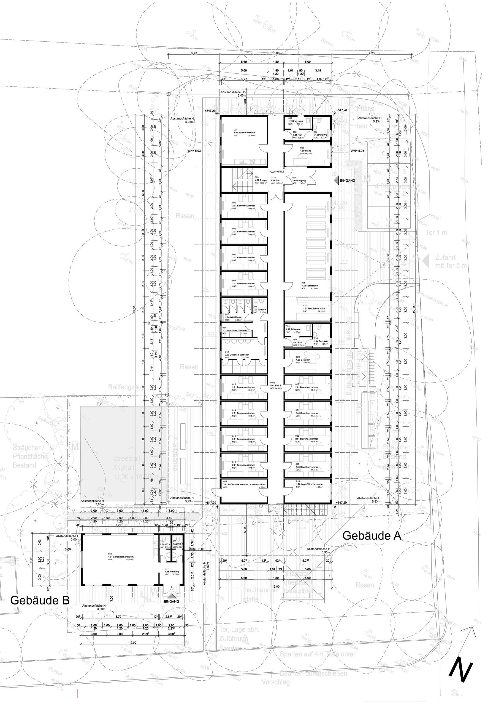

vista exterior 1
vista exterior 2
vista exterior 3

containers en obra antes de ser montados
alzados

plano de situación
habitación planta baja

pasillo planta baja
habitación primera planta
pasillo primera planta
El proyecto, destinado a albergar a refugiados menores de edad que llegan a Alemania sin la presencia de sus padres,
se emplaza en el barrio de Untergiesing-Harlaching, al sur de Múnich.
La fuerte e inmediata demanda de alojamiento hace que se recurra a la construcción prefabricada de containers: rápida,
economica y con una duración determinada (10 años).
Excepcionalmente se permite que se comience con la obra antes de la concesión de la licencia, pues todo el proceso (desde
el proyecto básico hasta la entrega del edificio terminado al ayuntamiento) ha de llevarse a cabo en menos de un año.
Por eso se hace especialmente importante una buena gestión y coordinación de todos los miembros que participan en el
proyecto.
Se trata de un edificio constituido por 60 módulos prefabricados repartidos en dos plantas que albergan 24 habitaciones
dobles, baños, duchas y lavanderías, así como cocinas, salas comunes y zonas de administración y seminarios y un pabellón
de 3 módulos en el cual se encuentra una sala común con cocina y baños, destinado a servir como local de asociaciones
para el barrio.
En los espacios exteriores se proyecta un área recreativa en el espacio que articula los 2 edificios con pista de baloncesto,
mesa de ping-pong, bancos y una pérgola en la que resguardarse de las inclemencias del tiempo.
En el acceso principal se encuentran tanto el parking para coches como para bicicletas.
En cuanto a la fachada, se delimitan los diferentes módulos de container con un marco blanco y se eligen 3 colores combinados
como si de un juego de piezas se tratara para construir un alzado integrado en el entorno arbolado, “colorido y alegre”
(premisa del proyecto), pues no ha de olvidarse quienes son los usuarios.
Los colores adquieren mucha importancia también en los espacios interiores, se utilizan los de suelos, puertas y paredes
para diferenciar los distintos espacios y las dos plantas (siendo asi más fáciles de reconocer), combinandose los colores
amarillo y verde, con blancos y grises más neutros.
colores del suelo planta de acceso
colores del suelo primera planta
El suelo del pasillo, las cocinas y salas comunes de la planta de acceso son de color amarillo, los de la primera planta
verdes, tienen paredes blancas y puertas grises (en estas zonas es el suelo el elemento que da color).
El suelo de las habitaciones es gris claro (como el de las zonas administrativas), y son las puertas (amarillas en la
primera planta, verdes en la segunda), junto con la pared donde irá colocada la cama, las que las dotan de color a estos
espacios.
El color de las puertas hace reconocible el uso de los espacios sin necesidad de leer su cartel: Si la puerta es de
color, es una habitación.